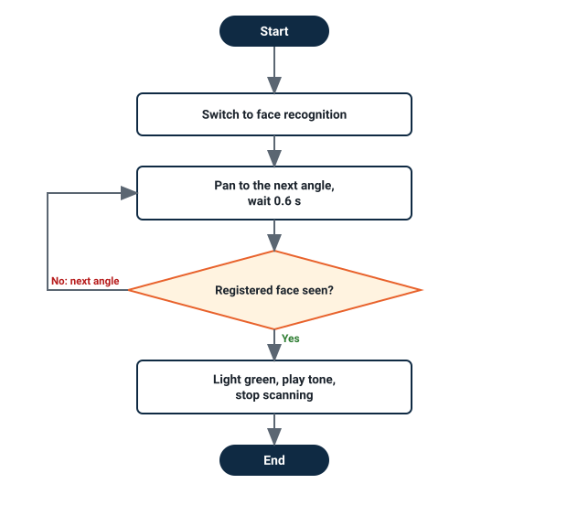
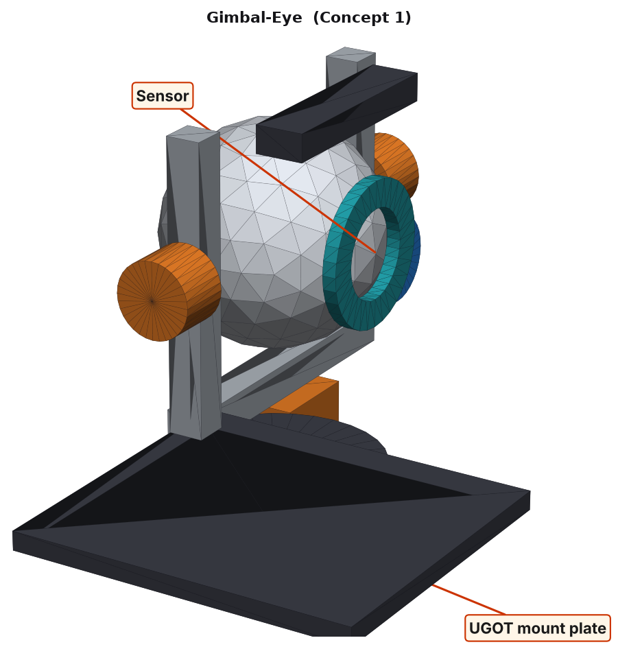

How Criterion C connects to Criterion B
B gave you a digital design. C proves you can make a working robot that does the same job, then explains what changed.
From B1 Specification
The criteria a robot can show become your tests: 7.1 Pan covers 180° and tilt covers 60° in under 3 seconds; 7.2 Camera view is never blocked across the full pan and tilt range; face recognised in AI vision mode.
From B3 Chosen design
“Gimbal-Eye” (pan-tilt eyeball) is the sketch you compare with in C4.
From B4 Detailed plans
Code from your system diagram, flowchart, wireframe and pseudocode. Changes to these are explained in C4.
C1 · Logical plan
Six 70-minute lessons. Each task has a time, resources, a check and what to do if it fails, so a classmate could follow it without asking you.
1. Timeline (Gantt chart)
| Task | Lesson 1 | Lesson 2 | Lesson 3 | Lesson 4 | Lesson 5 | Lesson 6 |
|---|---|---|---|---|---|---|
| 1.1 Plan the tests and check the kit | 15 | |||||
| 1.2 Assemble and connect the robot | 25 | |||||
| 1.3 First Python program: turn the camera to look left, centre and right | 20 | |||||
| 2.1 Python: read the camera (face recognition) | 25 | |||||
| 2.2 Calibrate and characterise the sensor | 35 | |||||
| 3.1 Python: pan / tilt servos functions and safe limits | 30 | |||||
| 3.2 Python: pan and tilt control from the keyboard | 30 | |||||
| 4.1 Python: scan, find a registered face, light and sound, version 1 | 30 | |||||
| 4.2 Test version 1 | 30 | |||||
| 5.1 Improve the code: version 2 | 35 | |||||
| 5.2 Retest version 2 (same protocol) | 25 | |||||
| 6.1 Final trial | 30 | |||||
| 6.2 Record video and compare with B3 | 30 | |||||
| Log entry with images (every lesson) | 10 | 10 | 10 | 10 | 10 | 10 |
Numbers are minutes. building and testing Python coding · Total 420 min (6 × 70).
2. Task and sub-task plan
| # | Task and sub-tasks (in order) | Time | Resources | Check | If it goes wrong |
|---|---|---|---|---|---|
| 1.1 | Plan the tests and check the kit. (a) Read the B1 criteria and your B4 flowchart. (b) Fill in the test plan below. (c) Tick the kit parts you need: UGOT camera module, pan/tilt arm, main controller, laptop. | 15 min | B1 and B3 pages, parts list, test plan | Every test has a number of trials and a pass mark. | Missing part: tell the teacher now, and plan around it. |
| 1.2 | Assemble and connect. (a) Build the robot from the kit. (b) Power on. (c) Connect the laptop to the UGOT. (d) Photograph the finished robot. | 25 min | UGOT camera module, pan/tilt arm, main controller, laptop | Robot connects. Cables are clear of wheels and moving parts. | Will not connect: restart both, check the network, ask. |
| 1.3 | First program. (a) Open the Python editor. (b) Turn the camera to look left, centre and right. (c) Save as hello_06.py. | 20 min | Python editor, UGOT robot | The robot does what the program says. | Nothing happens: check the connection and the function names. |
| 2.1 | Read the sensor. (a) Print the camera (face recognition) readings every 0.2 s. (b) Change what the sensor sees. (c) Screenshot the output. | 25 min | Python editor, test objects | Readings change when the scene changes. | Flat readings: check the port, the mode and the cable. |
| 2.2 | Calibrate. (a) Prepare five students at 0.5, 1 and 2 m, with and without a mask. (b) Record 3 readings each. (c) Plot or tabulate the results. | 35 min | Ruler or test cards, results table | You know where the sensor is reliable and where it is not. | Readings unstable: shield the sensor from light and repeat. |
| 3.1 | Functions and safe limits. (a) Write short functions for the pan / tilt servos. (b) Test each one. (c) Find the safe limits and write them as named constants. | 30 min | Python editor, robot | Each function works. Limits are named constants. | Moves too far or too fast: lower the value and retest. |
| 3.2 | Control. (a) Add code to pan and tilt control from the keyboard. (b) Test with a classmate watching. (c) Keep hands and cables clear. | 30 min | Controller or keyboard, robot | Control is smooth and stops on command. | Laggy control: shorten the loop delay. |
| 4.1 | Version 1. (a) Start from the B4 flowchart and pseudocode. (b) Write the loop to scan, find a registered face, light and sound. (c) Save as 06_v1.py. | 30 min | B4 plans, Python editor | The code follows the flowchart step for step. | Stuck: print the values on every loop to see where it goes wrong. |
| 4.2 | Test version 1. (a) Run the protocol: five registered faces and five unregistered faces × three distances. (b) Record every trial, and why each failure happened. (c) Screenshot one failure. | 30 min | Test props, results table | Every trial is recorded, passes and failures. | Many failures: do not change the code yet. Record and learn first. |
| 5.1 | Improve to version 2. (a) Pick the causes from your 4.2 data. (b) Change the code one thing at a time. (c) Save as 06_v2.py. | 35 min | v1 code, results table | Each change links to a test result. | A change breaks something: undo it and try a smaller step. |
| 5.2 | Retest version 2. Same protocol, same table, same start line, same number of trials. | 25 min | As 4.2 | A fair comparison: only the code changed. | Results worse: go back to v1 and compare. |
| 6.1 | Final trial. Five registered faces and five unregistered faces × three distances, counted live. | 30 min | As 4.2, camera | Success rate against the pass marks. | Below target: explain why in C4 and what you would try next. |
| 6.2 | Video and comparison. (a) Record 90 seconds explaining your code and tests. (b) Place a photo of the final robot next to the B3 “Gimbal-Eye” sketch. | 30 min | Phone, tripod, B3 sketch | The video shows code, test and result clearly. | Poor sound: re-record in a quiet corner. |
3. Test plan linked to B1
| Test | What you measure | Method | Trials | Pass mark | B1 link |
|---|---|---|---|---|---|
| T1 Recognition | Registered face recognised | Face at 0.5, 1 and 2 m | 5 per distance | At least 4 of 5 at 1 m | 7.1 |
| T2 False alarm | Unregistered faces wrongly accepted | Five unregistered students | 5 | 0 wrong | 7.1 |
| T3 Sweep time | Time for a 180° pan and 60° tilt | Phone stopwatch | 5 | Under 3 s | 7.1 |
| T4 View | Camera image across the whole sweep | Screenshot at each end stop | 3 | Nothing blocks the image | 7.2 |
Test protocol for this topic: five registered faces and five unregistered faces × three distances.
C2 · Technical skills and explaining the code
Show with screenshots and video how the program works and how it helps the client. The B1 client need: pan covers 180° and tilt covers 60° in under 3 seconds.
Python skills you must show
Variables and constantsif / elif / elsewhile loopsListsfor loopsprint() for testingCommentsRecording results in a tablebreak to leave a loop
Show each skill in your own code, and explain it in your own words. Mild: variables, if and while. Spicy: add your own functions or lists. Hot: add a filter for noisy readings, a time limit and a safe stop.
Version 1 of the code
switch_to_face_recognition() while True: if face_recognised("Amira"): light_on("green") else: light_off()
Version 2 of the code and what each line does
ANGLES = [-90, -45, 0, 45, 90] switch_to_face_recognition() found = False while not found: for a in ANGLES: pan_to(a) sleep(0.6) # let the camera settle if face_recognised("Amira"): light_on("green"); play_tone_until_end("C") found = True break light_off()
| Line | What it does and why |
|---|---|
switch_to_face_recognition() | Chooses the AI vision mode. It must be set before the recognition block can work. |
face_recognised("Amira") | Returns True (1) if the registered face is seen, otherwise False (0). |
ANGLES = [-90 … 90] | The list of pan positions to scan, from left to right. |
sleep(0.6) | Waits for the camera to stop moving. A blurry image gave missed faces in version 1. |
play_tone_until_end("C") | Plays the tone and waits until it ends, so tones do not overlap. |
found = True / break | A flag and break stop the scan once the face is found. |
Flowchart of the final code (version 2)

Storyboard for your 90-second explanation video
| Time | Show | Say |
|---|---|---|
| 0:00–0:10 | The robot on the test table | “This is my UGOT robot for Observant Eyes. Its job: scan, find a registered face, light and sound.” |
| 0:10–0:30 | Screen recording of the code, scrolling slowly | “face_recognised("Amira"): Returns True (1) if the registered face is seen, otherwise False (0).” |
| 0:30–0:50 | Close-up of the camera (face recognition) and your calibration | “I calibrated it with five students at 0.5, 1 and 2 m, with and without a mask. It works reliably between … and … .” |
| 0:50–1:10 | One full trial from start to finish | “Here the robot … . The program decides by … .” |
| 1:10–1:30 | Results table or chart on screen | “Version 2 passed … of … against … for version 1. This meets (or does not meet) my target, and it helps the client because …” |
C3 · Following the plan: lesson-by-lesson log
One entry per lesson, with images of the current development, what was done, actual time against the plan, the problem and the next step. Write it at the end of every lesson.
Lesson 1 · Test plan, assembly and first program
- Whole robot from the front
- Sensors clearly visible
- Your name card or table number in shot
What I did and found: Kit built. Registered five faces from the class list with permission.
EXEMPLAR NOTE Write your own: what you did, the actual time, one problem, your decision and the next step.
Lesson 2 · Reading and calibrating the camera (face recognition)
- The readings on screen
- The test set-up with the ruler or cards
- A table or chart of your results
What I did and found: Camera image checked at each end stop. The cable blocked the view at 90°.
EXEMPLAR NOTE Write your own: what you did, the actual time, one problem, your decision and the next step.
Lesson 3 · Pan / tilt servos functions and control
- The functions and the safe-limit constants
- The robot in the safe and the limit position
What I did and found: Wrote pan_to(). Tested the 180° sweep time.
EXEMPLAR NOTE Write your own: what you did, the actual time, one problem, your decision and the next step.
Lesson 4 · Version 1 and first tests
- Version 1 code
- The console output of one failed trial
- Photo of the failure if you have one
What I did and found: Version 1 only checks the centre of the frame.
EXEMPLAR NOTE Write your own: what you did, the actual time, one problem, your decision and the next step.
Version 1 code
switch_to_face_recognition() while True: if face_recognised("Amira"): light_on("green") else: light_off()
Lesson 5 · Improving to version 2
- What changed from v1 to v2
- Results table: v1 against v2
What I did and found: Version 2 scans and finds a face in 4 of 5 trials at 1 m.
EXEMPLAR NOTE Write your own: what you did, the actual time, one problem, your decision and the next step.
Version 2 code
ANGLES = [-90, -45, 0, 45, 90] switch_to_face_recognition() found = False while not found: for a in ANGLES: pan_to(a) sleep(0.6) # let the camera settle if face_recognised("Amira"): light_on("green"); play_tone_until_end("C") found = True break light_off()
Lesson 6 · Final trial, video and comparison
- One frame from your 90-second video
- Final results table
- The B3 sketch next to the final robot
What I did and found: Final trial with video. Compared with the Gimbal-Eye sketch.
EXEMPLAR NOTE Write your own: what you did, the actual time, one problem, your decision and the next step.
C4 · Justifying changes
Compare the final robot with the B3 chosen sketch and with the plan. For each change: what changed, evidence, and a full reason linked to the specification.

- Same angle as the B3 sketch
- Sensors and moving parts visible
- Add arrows or labels to point out what is different
Changes to the design (B3 against the final robot)
| # | Original (B3 and B4) | Final robot | Reason for change (full justification) |
|---|---|---|---|
| 1 | “Gimbal-Eye”: pan-tilt eyeball. | The kit's own parts, set up as in B4. | This is a Digital Design unit with no fabrication, and the kit robot is provided. The kit parts do the same job as the B3 design. The B3 CAD model remains the digital design, and the robot proves that the function works. |
| 2 | B4 wireframe: a custom operator screen (live camera frame with box and more). | The kit's own controller or app, with values printed in the Python output. | Building a custom app is outside this unit. Printing the same values gives the same information for testing. |
Changes to the code (version 1 against version 2) EXEMPLAR
| # | Change | Evidence | Reason (full justification) |
|---|---|---|---|
| 1 | Fixed view → scan 5 angles | Photo: the face was outside the frame in version 1 | The robot cannot see people who are not in front, so it must look around. |
| 2 | Wait 0.6 s after each move | Blurry frames missed faces in 3 of 10 checks | The camera needs time to settle after the servos move. |
| 3 | Tone waits until it ends | Two tones overlapped and the sound was unclear | The "until the end" block keeps the signal clear for the client. |
Changes to the plan EXEMPLAR
| Plan said | What happened | Reason and effect |
|---|---|---|
| 1.2 Connect, 25 min. | Took 33 min (+8). | The laptop did not find the robot. I finished sub-task 1.3 at home the same day, so the rest of the plan did not move. |
| 5.1 Improve to v2, 35 min (three changes planned). | Changes made one at a time, with retests inside 5.2. | Testing after each change showed which change fixed which problem. It cost no extra time, and it gave the evidence for the code changes above. |
Final check against B1
Closes the loop with Criterion B. Use your own results. A partly met criterion is honest and scores better than a hidden failure.
| B1 criterion | Test | Your target and result | Met? |
|---|---|---|---|
| 7.1 Pan covers 180° and tilt covers 60° in under 3 seconds | T1, T2, T3 | Target: At least 4 of 5 at 1 m; 0 wrong; Under 3 s | ☐ Yes ☐ Partly ☐ No |
| 7.2 Camera view is never blocked across the full pan and tilt range; face recognised in AI vision mode | T4 | Target: Nothing blocks the image | ☐ Yes ☐ Partly ☐ No |
| Safety: STOP works and the robot fails safe | Add your own test | Target: stops at once on STOP and when a reading is missing | ☐ Yes ☐ Partly ☐ No |
| Mass, cost and size (2.1, 4.2, 5.1) | B4 digital design | Figures stay as in B4 (nothing was fabricated) | As in B4 |
Next steps
1. Answer the summative booklet. Download the Criterion C summative booklet, make your own copy (rename it with your name and class), and type your answers into it.
⬇ Download the summative booklet (Word)2. Test your technical skills. Take the Kahoot-style, fill-in-the-blank and matching quiz for this topic. Your score is saved to the class Google Sheet.
🧠 Take the Topic 06 quiz🐍 Python skills quiz🧩 Your turn
Plan it
All: write 6 tasks for your robot with a time for each. Most: add resources, a check and a pass mark. Some: give your plan to a classmate and record what they could not follow.
Show it
All: take one photo or screenshot every lesson and write two sentences. Most: add the actual time, one problem and your decision. Some: record a 90-second video explaining your code and tests.
Justify it
All: find one thing that differs from your B3 sketch and show it with a photo. Most: back one code change with test data (before and after). Some: check every B1 criterion and say honestly which are not fully met.